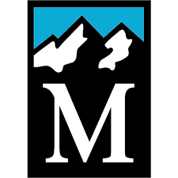
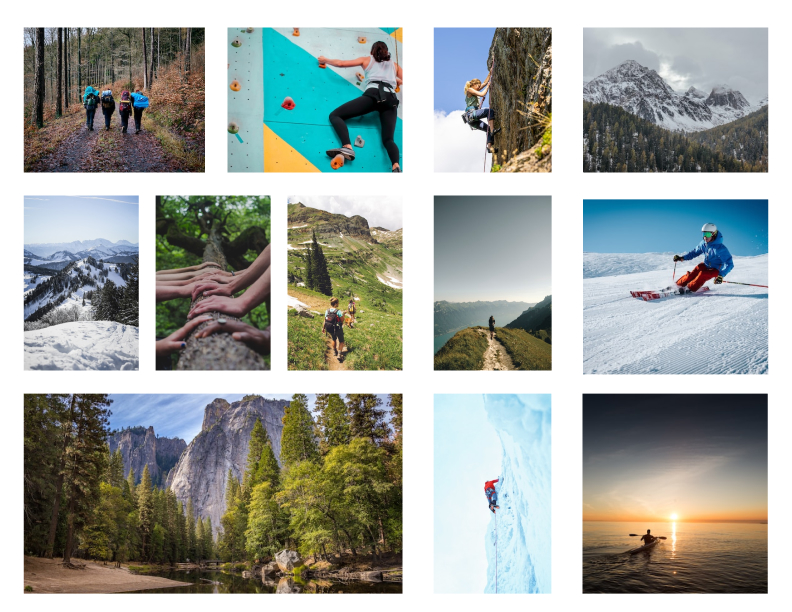

Brand Book - Redesign
My goal in the redesign was to space out the information on the
website and find a color scheme that is complementary to the nature of
the organization. During the process of creating this brand book, I
utilized the white space to separate the paragraphs and expand the
images.
Figma Outline:
Cover, client research, logo redesign, color scheme, typography &
visual elements, imagery, mobile flow & description
Here is a quick run-through of the brank book I created on Figma.
The rest that follows goes in more depth about my thought processes
and description for each of the brand book components.
The Mountaineers' mission is to help people in
the community get outdoors and expand their knowledge about nature
in the Pacific Northwest.
Adults ranging from ages 20 to 50 who are looking to participate
in outdoor activities are their primary audience.
Their secondary audience is youth or seniors outside of the age
range.
In the current Mountaineers visual brand, a strength
is the type hierarchy which makes the headings easily readable and
allows for navigation to different sections of the website.
However, a weakness of their current brand is the
saturation of the colors on the website. The bright orange and
neon green feel too bright and don't complement each other. Also,
the spacing between the text is very small, making the page feel
overwhelming with the amount of information. There is white space
on the margins of the page that could be used to spread the
amount of text and make images larger.
The keywords that describe how the organization brand should feel
are nature, mountains, welcoming/inclusive, lively, and
community.
For the logo redesign, I wanted to make the organization's name
more prominent. It was designed to convey a feeling of
challenging the outdoors and the courage to engage in activities
in nature. Currently, the logo is small mountains with a
capital M. My logo design expands the mountain range and fits
the organization's name underneath.

Current logo

New logo on dark background

New logo on light background
The Mountaineers is a nature-based organization. As I mentioned
previously, the current website uses bright colors that do not
complement each other well. In addition, most of the images
highlight various shades of green to represent the outdoors.
Thus to avoid having green in the color palette, I chose a
complementary color scheme of dark blue and beige (sand). The
bright orange is for a pop of color to the color scheme and
indicates buttons.

Typography & Visual Elements
For the typography, I chose the Roboto Slab Regular font. The
Serif typeface makes it semi-formal but still friendly. The
table shows the various sizes used in the redesign. The visual
elements listed show what I included in the mobile flow.
The blue banners are for the headings and borders
The image blur is for the image carosel on the home page
The buttons are common signifiers for actions people
normally are familiar with:
Hamburger menu
Profile icon
"X" to close
"+" to expand for more information
The imagery emphasizes nature as well as the social aspect of
connecting with the community. It depicts nature itself or
individuals/groups of people involved in an outdoor activity. The
images advocate for The Mountaineers' mission of helping people
engage in outdoor activities and build a community in the PNW.

Task - sign up for a course on The Mountaineers website
The first pain point was that the current homepage felt
text-heavy and had multiple tabs or buttons leading to the same
page. To make the homepage less overwhelming and redundant, I
removed most of the text and replaced the buttons with image
sliders to give people visuals of the outdoor activities.
The second pain point was that courses requiring prerequisite
courses did not link the user to that prerequisite course.
Thus the user would have to search for the prerequisite course
themselves. So I included a link to the prerequisite course to
simplify their search process.
The third pain point was that the signup page for the
course was too text-heavy with the apply button at the bottom
after much scrolling. Instead, I condensed all the information
into a box with a plus button to indicate the user to click on
it for more information.